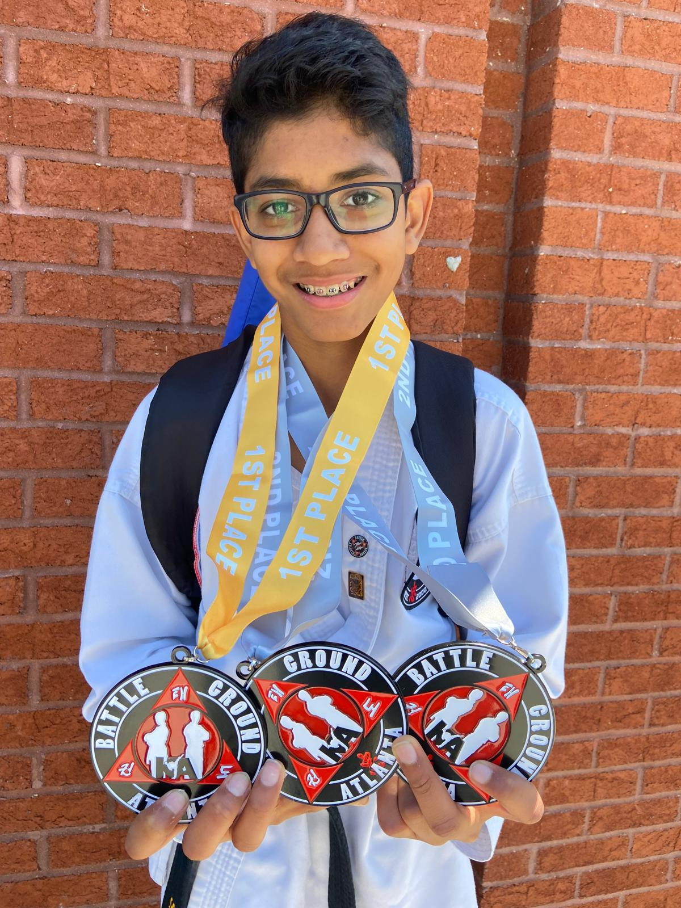
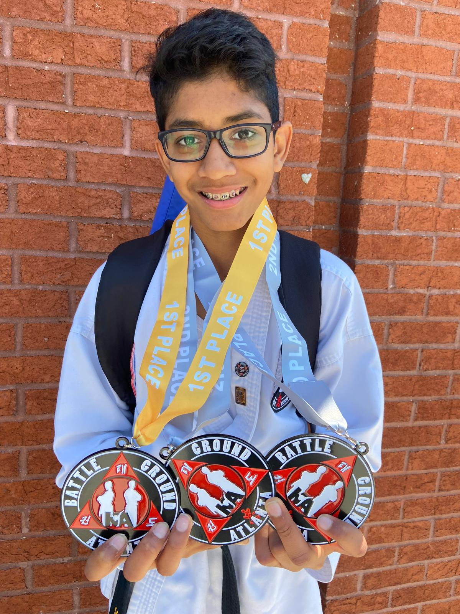
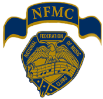

First Degree Black Belt in Taekwondo: Completed Black Belt certification, demonstrating discipline, self-defense, and leadership in martial arts. I have also won many first-place medals in Combat Sparring, Sparring, Traditional Forms, and Creative Weapons divisions. Training in Taekwondo has been an incredible experience that helped me build confidence, perseverance, and sportsmanship.
Certifications & Training
 Georgia Tech Courses & Workshops
Georgia Tech Courses & Workshops
- LEGO Robotics Part 2 (Dec 2022): Advanced robotics programming, building and testing LEGO Spike robots in complex challenges.
- Make:code Arcade (Feb 2023): Designed an 8-bit playable game from scratch using Microsoft MakeCode Arcade platform.
- Cybersecurity & AI Technology (Sept 2023): Explored cybersecurity fundamentals, threat models, and AI tools used to defend modern networks and data.
- 3D Printing (Nov 2023): Created 3D printable models using CAD software, prototyped designs at Georgia Tech Invention Studio.
- Chemical & Civil Engineering Workshop (Sept 2022): Conducted hands-on experiments to understand structural and chemical engineering principles through practical labs.
- LEGO Robotics Part 1 (2022): Beginner robotics course focused on construction, motors, and coding with LEGO Spike Prime system.
- Seth Bonder Camp (2025): Participated in an advanced engineering systems and analytics camp hosted by Georgia Tech CEISMC. Learned Python programming for data science, explored NumPy arrays, built simple machine learning models, and trained neural networks to make predictions. This hands-on camp strengthened my interest in AI and computational thinking.

Taekwondo Black Belt Certification
 

 National Federation of Music Clubs Awards
- 5 Years of Superior Plus Ratings: Awarded Superior + distinction level in five years of performance for classical guitar.
- Cash Awards: Received cash prize awards in 3 of those years for outstanding performance level.
- ABRSM Grade 4 Guitar Certification: Awarded distinction in both theory and performance (Associated Board of the Royal Schools of Music).